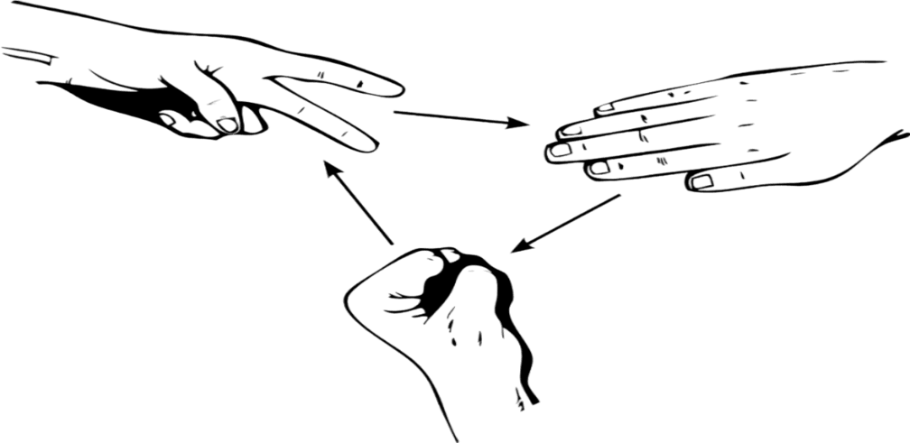

This project is a Python implementation of the classic Minesweeper game, played through the terminal. Players can customize the board size and mine count, strategically revealing squares to avoid hidden mines. Key features include mine flagging and dynamic game logic that reveals adjacent squares when empty. The game enhances logical thinking and problem-solving skills, showcasing my proficiency in Python and recursive programming.
This lightweight web application, built with Flask, allows users to shorten long URLs into easily shareable links. It features a simple API for creating short URLs, retrieving original URLs, and viewing statistics for each shortened link. Users can also generate custom shortcodes for added convenience. The application showcases my skills in web development, RESTful API design, and backend programming with Python.
This simple command-line application allows users to efficiently manage their to-do tasks. Users can add, list, complete, unmark, and remove tasks, all stored in a tasks.txt file. The program provides intuitive command-line options, ensuring ease of use while handling common task management functions. It demonstrates skills in file handling, user input validation, and Python programming.
Dive into the timeless challenge of Hangman, a word-guessing game where players must uncover a secret word before their chances run out. This Python-based version brings the classic game to your terminal, offering a delightful way to test your vocabulary and deduction skills. With a limited number of incorrect guesses allowed, players must think carefully about each letter they choose. Enjoy a fun and engaging experience, and see if you can solve the mystery word before it’s too late!
This interactive Coffee Sales Dashboard provides a comprehensive overview of sales performance and customer insights. Filterable by order date, roast type, cup size, and loyalty card usage, the dashboard offers flexible analysis of key metrics. It includes sales breakdowns by country, tracks total sales trends over time, and highlights the top 5 customers. Designed for a holistic view of coffee sales dynamics, it supports data-driven decision-making by revealing both high-level trends and specific customer preferences..
This Road Accident Dashboard in Excel offers a detailed analysis of accident data, with filters for accident date and rural or urban area classifications. Key insights include casualty breakdowns by road type, surface condition, location, and light conditions. The dashboard also provides a month-by-month comparison of current year casualties against the previous year, enabling quick identification of trends and areas needing attention. Designed for actionable insights, this dashboard is an effective tool for monitoring and improving road safety measures.
This project involves a detailed SQL analysis for Danny’s Diner to uncover customer spending patterns, visit frequency, and loyalty behavior. Key insights include each customer’s total spending, most popular items, and changes in purchasing habits before and after joining a loyalty program. Using SQL window functions and joins, I identified top products and calculated custom reward points, enhancing business understanding of customer preferences and loyalty program impact. This analysis demonstrates a strong ability to extract actionable insights from raw data to support data-driven business strategies.
.jpg)
This SQL project for a fictional pizza delivery service provides key insights into customer ordering behavior and delivery performance. Analyzing Pizza Metrics reveals total orders, popular pizza types, unique modifications, and peak order times, offering a clear view of customer preferences. Meanwhile, Runner and Customer Experience focuses on runner performance, tracking delivery times, distances, average speed, and success rates. Together, these metrics enable data-driven decisions to enhance both customer satisfaction and operational efficiency. This project showcases advanced SQL skills in creating impactful, business-ready insights.

This code provides the logic and UI for a Rock-Paper-Scissors game using HTML, JavaScript, and CSS, enabling players to challenge the computer in real-time. Key features include a dynamic scoreboard that tracks wins, losses, and ties using localStorage for persistence. The game offers a unique "auto-play" mode, where the game automatically runs at set intervals, and includes keyboard controls to simplify gameplay. Players can see results and moves displayed alongside the score, adding a clear, engaging visual component with emoji-based icons representing each move.
The Todo List application allows users to manage tasks efficiently by adding and deleting items. Users can input a task name and due date, which are displayed in a clean, user-friendly interface. Each task includes a "Delete" button, enabling easy removal of completed items. The app dynamically updates the list in real-time, ensuring that the display reflects the current state of the todo list. With a straightforward layout and functionality, this app provides an effective way to organize daily tasks.
.png)
This Tableau based interactive Sales Dashboard provides real-time insights into sales performance, showcasing total sales, profits, and quantities sold for 2023 compared to previous years. Users can explore detailed metrics by subcategory, enabling data-driven decision-making. With a user-friendly interface, the dashboard visualizes trends and highlights growth opportunities, making it an essential tool for businesses aiming to enhance their operational efficiency and profitability.